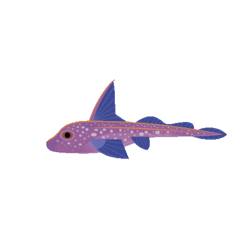

Welcome to the Fish Auditory EEG Dashboard
Explore our project sections using the menu above.
Project Overview
Background, goals, and key parameters of the auditory EEG analysis pipeline.
Analysis Pipeline
Step-by-step breakdown of the data processing and analysis workflow.
Visual Summaries
Interactive charts and summary statistics from the analysis results.
Team & Course
Meet the project team and see course information and acknowledgments.

© 2025 Fish Auditory EEG Dashboard. Data citation: Hunsaker, A., Brown, A., Sisneros, J., James, M., Tritt, C., Sonthalia, Y. (2025). Fish Auditory EEG Analysis Dataset. University of Washington. https://github.com/aoih-uw/fish_eeg
Thank you to the Spotted Ratfish